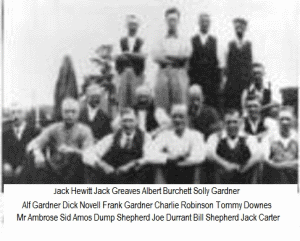
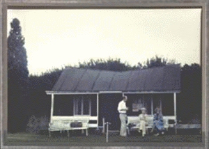
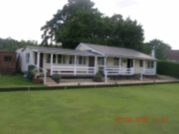

      <div class="row">
        <div class="column grid_12">
          <h1>Our History</h1>

          
          <p>
          During the 1920s a semi-derelict piece of land in The Sands (thought to be where the club 
          is located today) was used by the men of the village on an ad hoc basis for a game of bowls 
          and occasionally as a tennis court. There is a photo taken in 1928 of 15 bowlers, under the 
          title <strong>'The Seale &amp; Sands Bowls Club'</strong> and this is taken to be the start of 
          the club.
          </p>

          <p>
          The initial three rinks were dug by hand but during the Second World War the ground fell 
          into disuse. On September 13th 1945 a public meeting was held in the Sands Room to discuss 
          the possibility of restarting the club. The proposal was carried unanimously and the club 
          was resurrected. Of the 22 signifying their intention to become full members, there were 
          6 men who were in the 1928 photograph. The ladies section had just two members.
          </p>

          <p> 
          The first minutes itemised the club's assets as 
          <em>'12 sets of woods, 8 sets of slips and 12 bags valued at not less than &pound;44, 
            also a hut in a somewhat dilapidated condition'.
          </em>
          To pay for the upkeep of the green, whist drives, socials and a Christmas raffle were held 
          throughout the winter months. The men paid a five shillings (25p) per annum membership fee 
          for the privilege of bowling and the ladies paid two shillings and six pence (12&frac12;p).
          </p>

          <p>
          At that time the land appeared to be leased to the Seale Parish Council, who contributed 
          to the running costs, cut the grass and provided a shed. During the next five years an 
          Atco motor mower was purchased, a fence erected around the green, a water standpipe and 
          hose installed and the pavilion belonging to the defunct Sports Club was moved from the
          recreation ground to the south side of the green.
          </p>

          <p>
          The original plot of land was rented from the Parish Council until 30th May 1950 when it 
          was purchased from the owner, a Mrs Gertrude Pitcairn, for &pound;60. Although the debt 
          was supposed to be settled at a rate of &pound;10 per annum, it was paid off in two years. 
          The Club is administered by a charitable trust which protects the club and grounds from 
          urban developments. The original boundaries were fenced with wire netting, but in 1953 
          a privet hedge was planted; this was not too successful and in 1985 a lot of it was 
          replaced, by leylandii, which are still going strong.
          </p>
          
          

          <p>
          The next pavilion - still only a small wooden hut - was bought at auction for &pound;25 
          and erected in 1961. In 1982 this pavilion was by now a derelict hut which housed notice 
          boards, score boards, mowers and fertilisers. The whole place had a run down feel to it. 
          Two of our current members, Joan Varley and Anita Goddard, are pictured here in a 1978 
          photograph of the building. In 1983 more land for another two rinks was purchased from 
          Mrs Pitcairn's son for &pound;300 as a gift from one of our members.
          </p>

          <p>
          The original green was three rinks wide, a fourth was added by the members in 1979 and 
          two more were professionally installed in 1987.
          </p>

          <p>
          A redundant class room from Seale School was purchased in 1983 for &pound;321. It was 
          erected by the members during 1983 to 1985 and another &pound;5,000 was spent on additions 
          and improvements.
          </p>

          <p>
          A water sprinkler system for the newly enlarged green was installed at a cost of 
          &pound;4,600 in 1990.  In 1991 toilets were added to the small shed used as a changing room 
          and in 2002 the felt roof of the main building was replaced with cement fibre slates. 
          2005/6 saw a stylish revamp of the smaller building to provide separate changing rooms 
          for men and ladies and a veranda added to match the main clubhouse. In the main building 
          the kitchen fittings were renewed, work surfaces updated and a new counter and lighting 
          installed. All the electric wiring was professionally checked and approved.
          </p>

          

          <p>
          We are now the proud possessors of a (nearly) new green mower. This is the fourth we have 
          bought over the 84 years that the club has been in existence. The first was taken over 
          from the Sands Parish Council who maintained the green in the early days.  The second was 
          bought in 1962 for &pound;85 and the third - a reconditioned machine - was acquired in 1981 
          for &pound;300.
          </p>

          <p>
           Membership in the 1950's was about 30, going down in the 1960's and 1970's to around 25. 
           A membership drive in the 1980's saw the membership rise to 65 or so and then levelled off 
           in the high eighties; the new millenium saw a gradual decrease to the mid sixties. Most 
           members come from within a 10 mile radius of The Sands and all are playing members. 
           Ladies were afforded equal rights with the men in 1950 when the first lady became a full 
           member.
           </p>

        </div> <!-- content -->
      </div>
